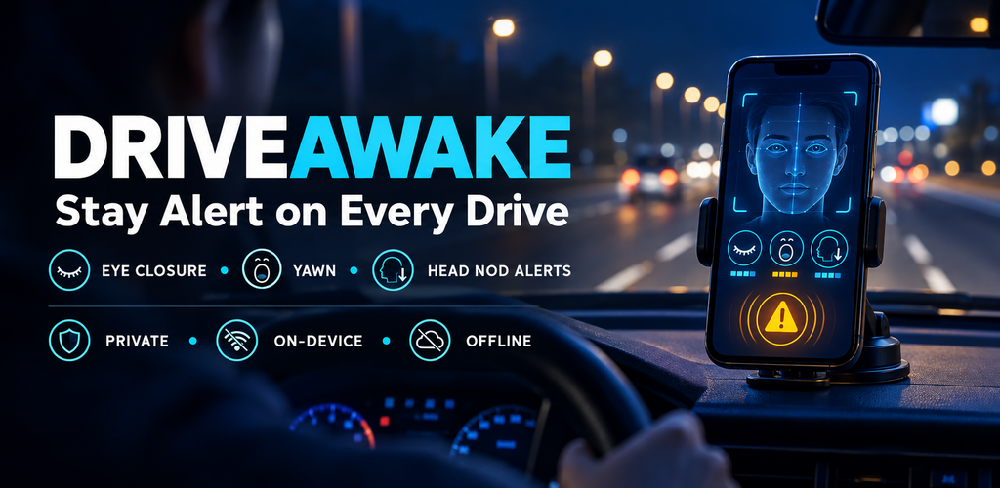

Atento en cada viaje
DriveAwake usa la cámara frontal del teléfono para vigilar señales de cansancio mientras conduces, y te avisa con sonido, vibración y voz. Sigue funcionando con tu app de navegación en pantalla.

Qué vigila
DriveAwake nunca avisa por un solo parpadeo o bostezo. Combina varias señales a lo largo del tiempo en un nivel de riesgo.
Cierre de ojos
Detecta cuándo los ojos siguen cerrados más que en un parpadeo normal, y qué parte del último minuto estuvieron cerrados.
Bostezos
Cuenta los bostezos repetidos en pocos minutos y los distingue de hablar.
Cabeceos
Detecta la caída de la cabeza, y da la alarma de inmediato si además tienes los ojos cerrados.
Vista fuera del camino
Te recuerda mirar al frente si mantienes la cabeza girada varios segundos.
Funciona con tu navegador
Inicia el viaje y abre Google Maps, Waze o cualquier otra app. El monitoreo continúa en segundo plano.
Calibrada para ti
Una calibración guiada de 16 segundos adapta la detección a tu rostro y a la posición del teléfono.
Privada por diseño
Las imágenes se analizan en tu teléfono y se descartan al instante. No se graba ni se sube nada.
Totalmente offline
Sin cuenta, sin servidor y sin anuncios. La app ni siquiera pide permiso de Internet.
Cómo funciona
Prepárala antes de empezar a conducir. Una vez en marcha no necesitas tocar el teléfono.
- Coloca el teléfonoPonlo en un soporte donde la cámara frontal vea tu rostro.
- Calibra una vezSigue las instrucciones habladas durante 16 segundos.
- Inicia el viajeComprueba que la vista previa muestra tu rostro y abre tu app de navegación.
- ConduceSi aparecen señales de cansancio, DriveAwake te avisa. Detenla desde la notificación al llegar.
Instalar la versión de prueba
Es una versión de prueba temprana, distribuida fuera de Google Play. Se ha probado en un solo teléfono con gestos simulados, todavía no en condiciones reales de conducción.
- Descarga el APKPulsa el botón desde tu teléfono Android.
- Permite la instalaciónAndroid te pedirá permitir que el navegador instale apps. También puede mostrar un aviso de Play Protect porque la app no viene de la tienda.
- Abre DriveAwakeConcede acceso a la cámara y a las notificaciones, y calibra antes del primer viaje.
Conoce sus límites
DriveAwake es una herramienta de asistencia preventiva y complementaria. No es un dispositivo médico, no garantiza la detección de cansancio y no reemplaza el descanso.
- Con poca luz o de noche la cámara frontal ve mal tu rostro y la detección pierde fiabilidad.
- Con gafas oscuras no se pueden medir los ojos.
- Puede haber avisos falsos y señales de cansancio que no se detecten.
- Si sientes sueño, detente en un lugar seguro.